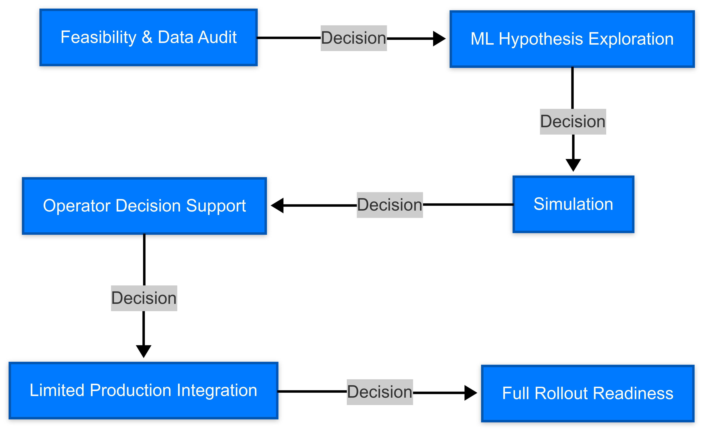

** Framework That Embraces Uncertainty**¶
One of the biggest mistakes in AI adoption is treating uncertainty as something to be hidden or ignored. In traditional engineering projects, uncertainty is minimized through decades of standards, physical modeling, and deterministic planning. But in AI/ML, uncertainty is not only expected -- it's an essential part of how the technology learns and adapts.
Instead of resisting that uncertainty, we can design around it.
That's where this framework comes in. It doesn't promise perfection -- it's not a rigid waterfall plan. Instead, it provides scaffolding for responsible exploration:
- Decision gates to evaluate progress
- Simulation phases to test ideas safely
- Operator involvement to ensure trust and adoption
If we build the right foundation, we don't just make AI safer.
We make it more enjoyable to work with, more trusted by stakeholders, and more likely to create lasting value.
To make this concrete, let's walk through a realistic (but fictional) case study:
Client: TerraMiner Corp
Industry: Mining & Metal Processing
Goal: Reduce energy usage and increase throughput via AI -- including Reinforcement Learning for control optimization
Context: An engineering-driven organization with no prior ML adoption. Strong hesitation around deploying "black-box" AI models into live operations due to concerns about safety, downtime, and regulatory impact.
In the following sections, we'll use TerraMiner's journey to illustrate how a phased AI framework -- combined with simulation, human-in-the-loop validation, and deliberate decision points -- can turn uncertainty into a strength instead of a liability.
Staged ML/RL Project¶
Set Milestones Around Usefulness, Not Perfection.
To ensure the project remains valuable even in early stages, we break the ML initiative into staged, learning-focused milestones. Each phase produces concrete insights, regardless of whether the final automation is implemented.
Note: Each phase is valuable even if the next phase never happens. That’s the core principle.

| Phase | Objective | Deliverable | "Success" Looks Like | Decision (Go/No-Go Criteria & Options) |
|---|---|---|---|---|
| Phase 1 - Feasibility & Data Audit | Evaluate whether existing data is suitable for ML | Data map, gaps, instrumentation recommendations | TerraMiner understands what their data can/can't support | Decision: Is data sufficient to proceed with modeling? Go: Data quality meets minimum requirements for pilot. No-Go: Recommend instrumentation upgrades before ML. Adjust: Proceed with a simplified use case or synthetic data. |
| Phase 2 - ML Hypothesis Exploration | Train initial models on historical data | Offline model results vs KPIs | ML shows ability to predict or recommend better than baseline | Decision: Does ML show promise over heuristics? Go: Model outperforms baseline or provides valuable signal. No-Go: Stop or reformulate use case. Adjust: Explore alternative targets or hybrid models. |
| Phase 3 - Simulation | Create or adapt a process simulator to test ML/RL logic in a virtual environment | Simulator linked to agent/environment logic, test results | RL/ML system shows behavior in simulated environment without risk | Decision: Is simulator behavior realistic and useful for policy evaluation? Go: Simulator behaves as expected, agent shows safe behavior. No-Go: Rebuild or postpone RL use case. Adjust: Use simplified models or partial subsystems. |
| Phase 4 - Operator Decision Support | Use ML/RL in recommendation mode only (no automation), test against real ops | Side-by-side recommendations dashboard | Operators engage with system, trust begins to build | Decision: Are operators engaging with and validating ML recommendations? Go: Operators find suggestions useful and non-disruptive. No-Go: Stop deployment and focus on explainability or training. Adjust: Run additional simulations or redesign dashboard. |
| Phase 5 - Limited Production Integration | Deploy ML control to one subsystem or shift, with rollback capability | Live metrics from test system, alerts, rollback logs | Controlled success in production-like environment | Decision: Does the model perform acceptably in live settings? Go: Model improves key metrics with stability and safety. No-Go: Revert to manual mode and review root causes. Adjust: Tune model or expand simulation before retry. |
| Phase 6 - Full Rollout Readiness | Hand off tools, training, and process ownership to client team | Documentation, automated pipelines, team onboarding | Client can operate and improve ML/RL system independently | Decision: Is the client ready to own and scale the solution? Go: Team has been trained and infrastructure supports rollout. No-Go: Delay scale-up, build internal capacity. Adjust: Launch partial rollout or provide extended support. |
** Phase 3: Simulation – Deep Dive**¶
Why It’s Critical¶
-
Provides a safe environment to test agent behavior.
-
Allows clients to see consequences of AI decisions before going live.
-
Builds confidence in “what-if” testing (e.g. "What happens if we increase crusher RPM by 20%?").
Types of Simulators¶
-
Process Simulators (e.g. metallurgical flow, energy balances, hydraulics)
-
Digital Twins (if available)
-
Custom RL-compatible Environments (e.g., OpenAI Gym-style wrappers over legacy simulators)
Learning Outcomes from Simulation¶
| Test | Learning |
|---|---|
| ML/RL performance vs rule-based logic | Quantify possible gains before risking live ops |
| Sensitivity tests | Understand how volatile the system is to small parameter changes |
| Failure mode tests | Identify risky agent behaviors before they happen in production |
| Simulation-to-reality gap | Document what’s missing from simulator to make live integration trustworthy |
Risk Management Table¶
Instead of setting unrealistic expectations, we define success as learning, and set pre-agreed “no-go” points where we decide whether to pivot, pause, or proceed.
| Phase | Risk | Detection Point | Mitigation | Framing the Outcome |
|---|---|---|---|---|
| Phase 1 – Feasibility & Data Audit | Data is too sparse or noisy for modeling | During exploratory data analysis | Recommend instrumentation upgrades or data fusion techniques | "We now know where the data gaps are — this saves time before deeper investment." |
| Data governance issues (access, silos, security) | During data ingestion setup | Align with IT/security early, request data access plan | "We've uncovered key organizational blockers and created a plan to resolve them." | |
| KPI misalignment between business and technical teams | Project kickoff / initial scoping | Run a KPI workshop to align ML goals with business goals | "We avoided building the wrong thing by syncing on goals upfront." | |
| Phase 2 – ML Hypothesis Exploration | Model underperforms baseline heuristics | Offline model evaluation | Try alternate targets, features, or problem formulations | "We learned early that this path didn’t work — a fast fail saves long-term cost." |
| Historical data doesn’t represent real system variability | While splitting train/test datasets | Inject variation scenarios, synthetic data, or scenario analysis | "This shows us how much production dynamics need to be captured — future-ready insight." | |
| Simulator scope underestimated or late to start | Midway through Phase 2 planning | Begin minimal sim definition early; leverage existing process models | "We adjusted course early to give the sim time to mature in parallel with modeling." | |
| Phase 3 – Simulation Integration | Simulator doesn’t match real process behavior | During sim-agent validation runs | Use hybrid testing (compare sim vs logs), introduce realism layer | "We’ve defined the fidelity gap — it guides safe deployment boundaries." |
| RL agent learns unsafe or brittle policies | Policy evaluation, safety rule tests | Add reward penalties, safety constraints, domain knowledge filters | "We surfaced risky behaviors in simulation, not reality — that’s a win." | |
| Simulation takes too long to run or scale | Early prototyping or agent training phase | Simplify physics, parallelize, use fast approximators | "We made simulation feasible for iterative learning — a core ML enabler." | |
| Phase 4 – Operator Decision Support | Operators reject or ignore ML recommendations | Pilot usage feedback sessions | Use co-design, add explainability, emphasize augmentation not replacement | "We gained adoption insight that will improve user trust and engagement." |
| Recommendations conflict with existing SOPs | Pilot observation / domain review | Involve SME validation, tune model constraints to respect SOPs | "We learned how to align AI with existing practices instead of fighting them." | |
| Engineers doubt the sim-to-real transferability | Side-by-side testing with real-world | Document simulator assumptions and transfer validation results | "We gave engineers visibility and trust in the testing chain — crucial for buy-in." | |
| Phase 5 – Limited Production Integration | ML decisions cause unexpected system behavior | Online testing in shadow/rollback mode | Roll out with fallback controls, alerting, and sandboxing | "We safely scoped the test to learn what happens live without major exposure." |
| Infrastructure can’t support real-time inference | Integration testing with IT | Use batch predictions or edge deployment | "We now know what infra to upgrade — this is a digital transformation enabler." | |
| Metrics don’t improve during pilot | Post-deployment analysis | Analyze gap between sim, model, and ops context; iterate | "We captured valuable feedback and used it to refine model logic." | |
| Phase 6 – Full Rollout Readiness | Internal team not ready to own/maintain system | Readiness assessment, feedback interviews | Run capability training and handoff documentation | "We identified where knowledge transfer was needed before scale-up." |
| No retraining or monitoring pipeline in place | During post-pilot audits | Build MLOps tooling or retraining loop before scaling | "We baked in long-term sustainability and learning capacity." | |
| Organizational resistance to expanding AI use | Stakeholder review post-pilot | Share success stories, build champions, tie outcomes to business value | "We now have real-world results to guide buy-in and cultural adoption." |
Insight: Even if ML doesn’t scale, the client walks away with data visibility, process audits, and foundational upgrades — all real business value.¶